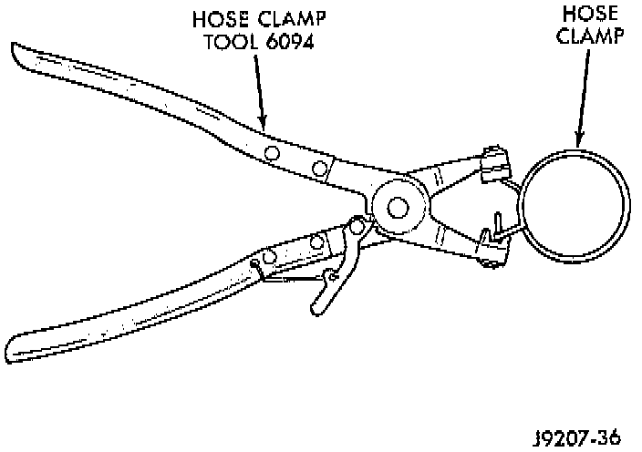
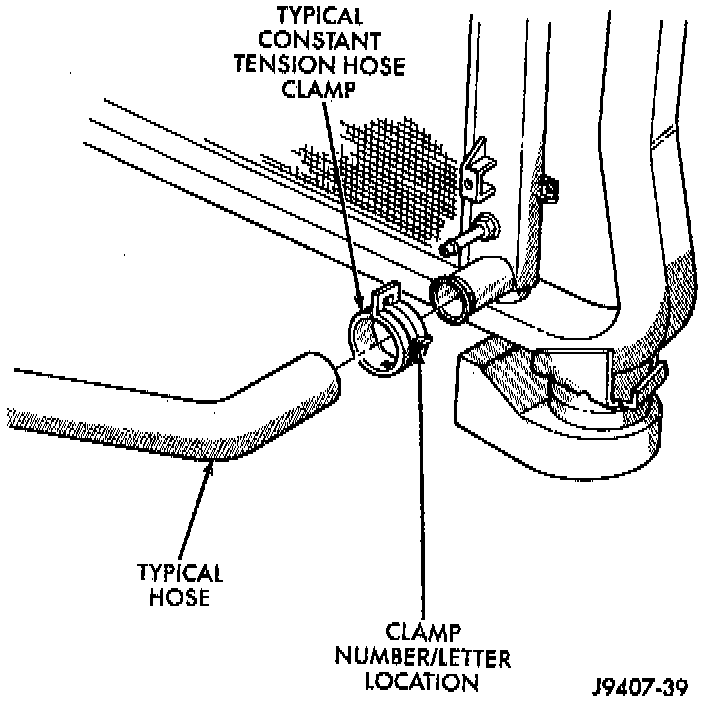
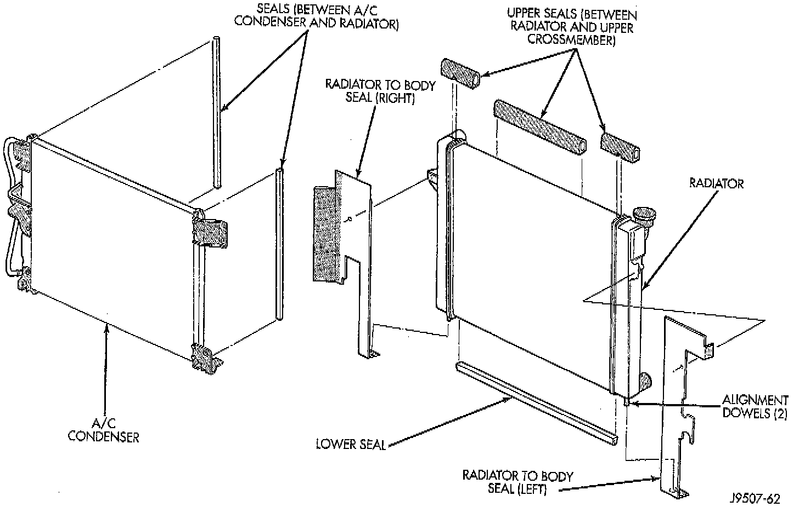
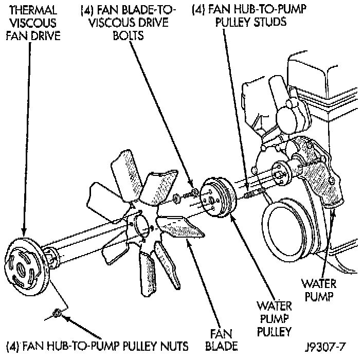
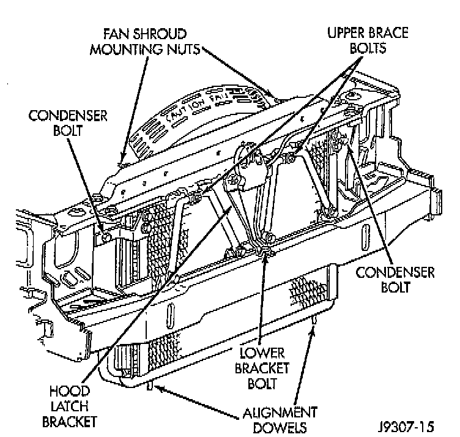
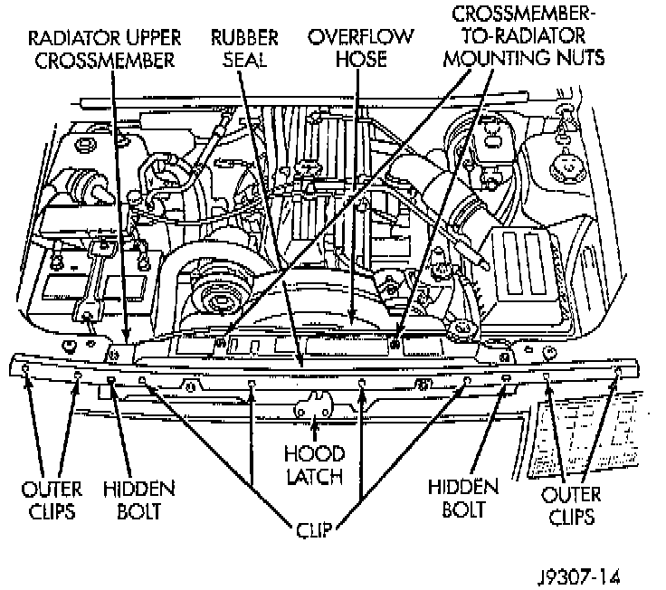
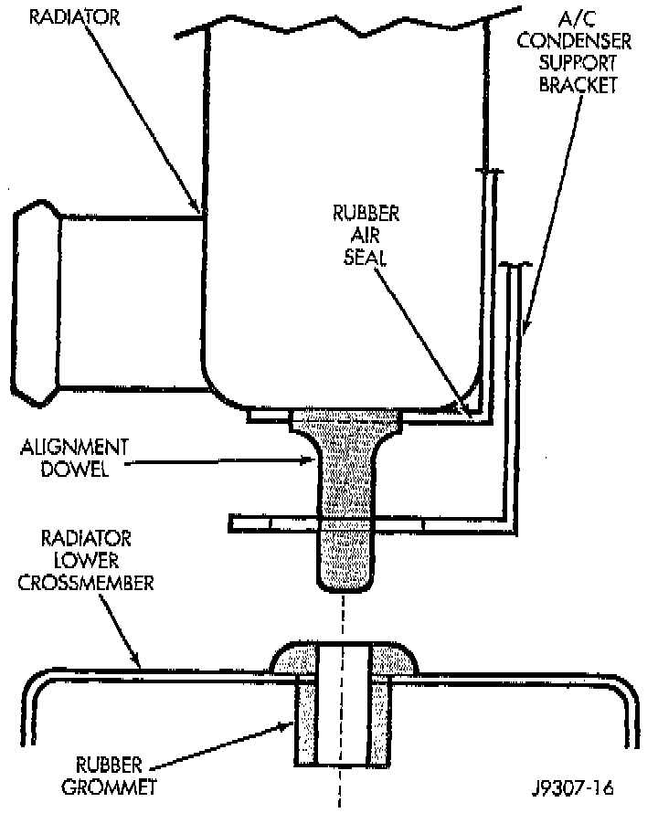

Removal
WARNINGS:^ DO NOT REMOVE THE CYLINDER BLOCK DRAIN PLUGS OR LOOSEN THE RADIATOR DRAINCOCK WITH THE SYSTEM HOT AND UNDER PRESSURE. SERIOUS BURNS FROM COOLANT CAN OCCUR.

^ CONSTANT TENSION HOSE CLAMPS ARE USED ON MOST COOLING SYSTEM HOSES. WHEN REMOVING OR INSTALLING, USE ONLY TOOLS DESIGNED FOR SERVICING THIS TYPE OF CLAMP, SUCH AS SPECIAL CLAMP TOOL (NUMBER 6094). SNAP-ON CLAMP TOOL (NUMBER HPC-20) MAY BE USED FOR LARGER CLAMPS. ALWAYS WEAR SAFETY GLASSES WHEN SERVICING CONSTANT TENSION CLAMPS.


CAUTIONS:
^ A number or letter is stamped into the tongue of constant tension clamps. If replacement is necessary, use only an original equipment clamp with matching number or letter.
^ When removing the radiator or A/C condenser for any reason, note the location of all radiator-to-body and radiator-to-A/C condenser rubber air seals. These are used at the top, bottom and sides of the radiator and A/C condenser. To prevent overheating, these seals must be installed to their original positions.
NOTE: Do not waste reusable coolant. If the solution is clean, drain the coolant into a clean container for reuse.
1. Disconnect the negative battery cable at battery.
2. Drain coolant from radiator.
3. Remove the four fan hub-to-water pump pulley mounting nuts. Carefully remove the fan assembly from the water pump pulley and position to center of fan shroud. Fan belt removal is not necessary as the water pump studs will hold the pump pulley in position.

4. Do not remove fan/viscous fan drive assembly from vehicle at this time.
5. Do not attempt to remove fan/viscous fan drive assembly from vehicle at this time.

6. Remove the two fan shroud-to-upper radiator crossmember mounting nuts.
7. Remove the fan assembly and fan shroud (as one unit) from vehicle.
8. Special quick-connect fittings are used to join the transmission cooling lines to the radiator. Refer to Transmission and Drivetrain.

9. The radiator upper crossmember can be adjusted left or right through the use of slotted holes. Before removal, mark the original position of the crossmember.
10. Eight clips are used to retain a rubber seal to the body and upper radiator crossmember. Gently pry up the outboard clips (two per side) until rubber seal can be removed. Do not remove the clips entirely. Fold back the seal on both sides for access to (the hidden) grille opening reinforcement mounting bolts. Remove these two bolts.
11. Remove the grill.
12. Remove the upper brace bolt from each of the two radiator braces.
13. Remove the two crossmember-to-radiator mounting nuts.
14. Working through grill opening, remove the lower bracket bolt securing lower part of hood latch support bracket to lower frame crossmember.
15. Remove the remaining four bolts securing the radiator upper crossmember to the body. Do not remove the hood latch or hood latch cable from the crossmember. Lift the crossmember straight up and lay to the side.

16. Equipped with air conditioning: Remove the two A/C condenser-to-radiator mounting bolts. These two bolts are also used to retain the side mounted rubber air seals. These seals are compressed between the A/C condenser and the radiator. The lower part of the air seals are compressed between the radiator and the A/C condenser mounting brackets.
17. Not equipped with air conditioning: Remove the two bolts retaining the side mounted rubber air seals to the radiator. The lower part of the air seals are compressed between the radiator and the Radiator lower crossmember.
CAUTION: Note the location of all rubber air seals. To prevent overheating, they must be installed back to their original positions.
18. Disconnect the coolant reserve/overflow tank hose at radiator.
19. Remove upper radiator hose at radiator. A special clamp tool must be used to remove the constant tension hose clamps.
20. Remove the lower radiator hose at the water pump end.
21. To gain access to lower radiator hose clamp at radiator, gently lift the radiator a slight amount. Remove hose clamp and hose.
22. The lower part of radiator is equipped with two alignment dowel pins. They are located on the bottom of radiator tank and fit into rubber grommets. These rubber grommets are pressed into the radiator lower crossmember.
WARNING: THE AIR CONDITIONING SYSTEM (IF EQUIPPED) IS UNDER A CONSTANT PRESSURE EVEN WITH THE ENGINE OFF.
23. If equipped with an auxiliary automatic transmission oil cooler, use caution when removing radiator. The oil cooler lines are routed through a rubber air seal on the left side of radiator. Do not cut or tear this seal.
24. Gently lift up and remove radiator from vehicle. Be careful not to scrape the radiator fins against any other component. Also be careful not to disturb the air conditioning condenser (if equipped).